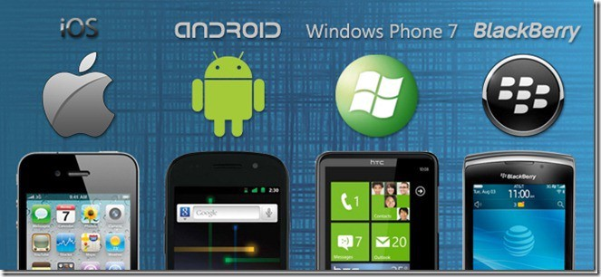
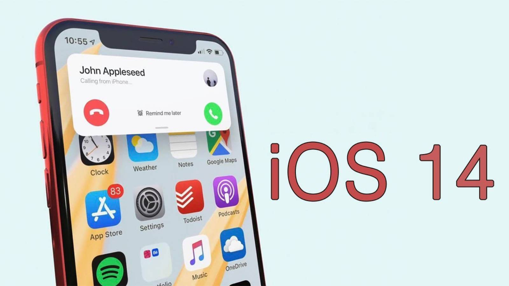
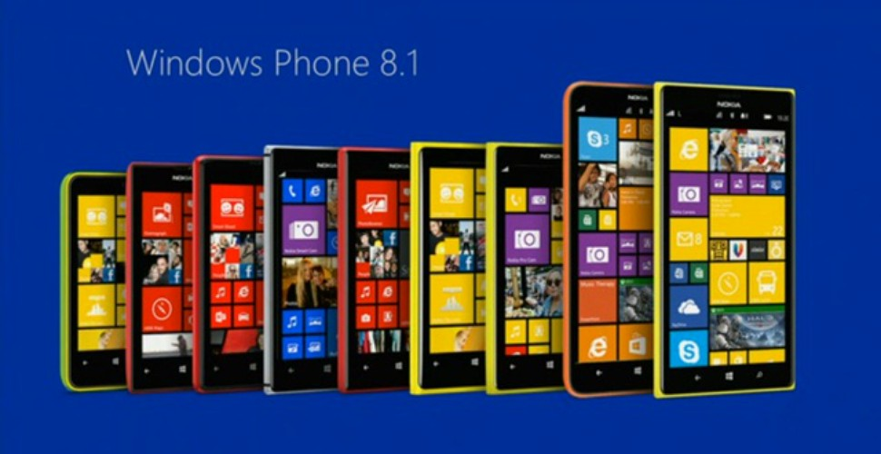
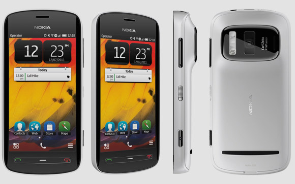
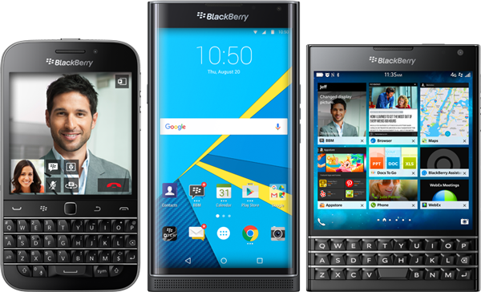
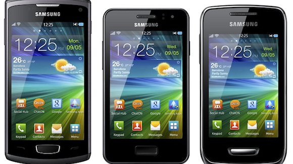

What is a mobile operating system?
Whether it's a laptop, desktop computer, smartphone, tablet, or smart watch, operating systems serve as graphical software overlays for controlling the device's internal hardware.
Most mobile OS present as a graphical display of buttons, icons, windows, and tiles that you can touch or interact with to perform various tasks. This visual architecture is the backbone of the operating system. Without the OS, the device would be a series of command prompts and inscrutable computer code. The mobile operating system manages the hardware and makes it possible for smartphones, tablets, and wearables to run apps and other programs in a user-friendly way. A mobile OS also manages mobile multimedia functions, mobile and internet connectivity, touch screen controls, Bluetooth connectivity, GPS navigation, cameras, speech recognition, and more. Most operating systems are not interchangeable. For example, if you have a Samsung phone, which runs the Android OS, you cannot use it to run Apple iOS, which is the operating system used to run iPhones, iPads, and iPod Touches.
Google's Android
Android, modeled after Linux , is the world's most popular mobile OS. Its popularity is largely driven by Google's distribution model: Android is an open source project that gives phone manufacturers and cell phone carriers free license to use Android and modify the core OS for their devices. Although most Android instances stick closely to the core, the freedom to modify Android has led to many challenges, in what is now referred to as Android fragmentation.
Even so, Android continues to grow bigger and more powerful with each new version. In August 2018, Google released Android 9.0 Pie, which incorporates artificial intelligence into the platform, making it possible for a device to adapt to user activity.

Apple's iOS
iOS (formerly iPhone OS) is a mobile operating system created and developed by Apple Inc. exclusively for its hardware. It is the operating system that powers many of the company's mobile devices, including the iPhone and iPod Touch; According to Apple, there are now more than 1.4 billion active iOS devices worldwide.
Windows Phone (WP)
Windows Phone (WP) is a discontinued family of mobile operating systems developed by Microsoft for smartphones as the replacement successor to Windows Mobile and Zune. Windows Phone featured a new user interface derived from Metro design language.
Microsoft made official what was already known for years: the Windows Phone mobile operating system is dead. There’ll be no further development, no miraculous Windows 10 Mobile revivals, and no further attempts to compete with the overwhelming duopoly of Apple’s iOS and Google’s Android.
Symbian OS
Symbian OS is an operating system designed for mobile devices. Symbian was the leading smartphone platform up from 2003 up until 2010 (even 2011 for Europe). After that Google's Android OS took the lead.
Symbian was originally developed as a Proprietary software OS for PDAs in 1998 by the Symbian Ltd. consortium.
BlackBerry OS
BlackBerry OS is a proprietary mobile operating system developed by Canadian company BlackBerry Limited, designed specifically for Research In Motion's (RIM) BlackBerry devices. The BlackBerry OS runs on Blackberry variant phones like the BlackBerry Bold, Curve, Pearl and Storm series. The operating system provides multitasking and supports specialized input devices that have been adopted by BlackBerry for use in its handhelds, particularly the trackwheel, trackball, and most recently, the trackpad and touchscreen.
The BlackBerry OS is designed for smartphone environments and is best known for its robust support for push Internet email. This push email functionality is carried out through the dedicated BlackBerry Enterprise Server (BES), which has versions for Microsoft Exchange, Lotus Domino and Novell Groupwise.
Bada
Bada is a discontinued operating system for mobile devices such as smartphones and tablet computers. It was developed by Samsung Electronics. Its name means "ocean" or "sea" in Korean. It ranges from mid- to high-end smartphones.
Firefox OS
Firefox OS is a discontinued open-source operating system – made for smartphones, tablet computers and smart TVs – designed by Mozilla and external contributors. It is based on the rendering engine of the Firefox web browser, Gecko, and on the Linux kernel. It was first commercially released in 2013.